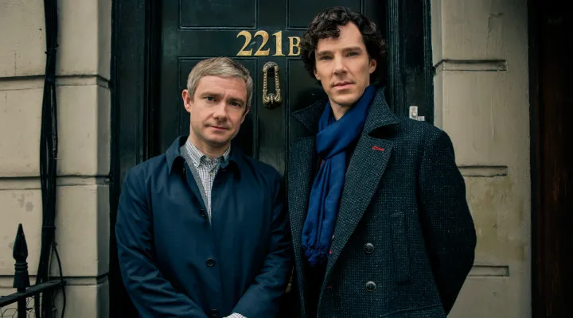
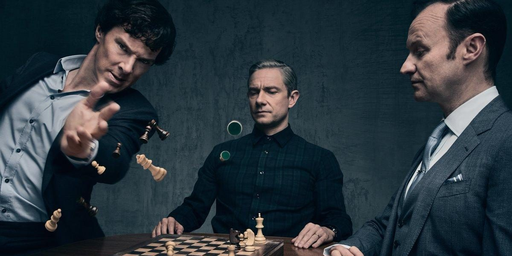

Sir Arthur Conan Doyle tarafından yaratılan ve 1887 yılında ilk kez okuyucuların karşısına çıktığı günden bugüne popüler kültürün önemli bir parçasına dönüşen Sherlock Holmes’e modern bir yorum getiren Sherlock, 2010 yılında BBC‘de yayınlanmaya başladı ve kısa sürede geniş izleyici kitlesine ulaştı. BBC’nin en çok izlenen dizilerinden biri olan Sherlock’un popülerliği Birleşik Krallık sınırlarının dışına da taştı ve ortaya son yılların en popüler dizilerinden biri çıktı. Steven Moffat ve Mark Gatiss‘in yaratıcısı olduğu dizide Sherlcok Holmes’e Benedict Cumberbatch hayat verirken, maceralarında onu yalnız bırakmayan dostu Dr. Watson’ı ise Martin Freeman canlandırıyor.
Sherlock Holmes danışman dedektiftir. Yüksek enerjisi ve hızlı konuşmasıyla izleyiciyi hemen ekran başına kitleyip eline bir avuç soru tutuşturur ve bir anda kendinizi, bu kendi kendine konuşan adamla dava çözmeye çalışırken bulursunuz. Davalarını çözerken uyguladığı tümevarım ve tümdengelim yöntemlerini uygulayışı, en ufak bir detayın aslında çözüme giden yolda ne kadar da önemli olduğunu göstermesi sizi en çok etkileyen şeylerden biri olur. Aynı zaman da adli tıp, botanik, siyaset, jeoloji, kimya, anatomi, suç tarihi gibi alanlarda da uzmandır. Pragmatist bir karakter olan Holmes, zihninde bilgileri sistematik bir şekilde yerleştirerek ihtiyacı olduğunda zihin köşkü yöntemiyle onlara erişip bu bilgileri kullanması akılda en çok kalan sahnelerden biridir. Bununla birlikte kendisine yararlı olmayan bilgileri de zihninden silmeyi tercih eder.
Güvenilir dostumuz John Watson’a gelirsek, onunla ortak bir arkadaş aracılığı ile başlayan bu arkadaşlık, birlikte dava çözme ile devam eder. Kendisi askeri bir doktordur. Holmesla aralarında oluşan arkadaşlık ikili için çok önemlidir. Watson’ın hayatında aradığı aksiyonu bulmasından tutun, ihtiyacı olduğunda Holmes’a bir kalbi olduğunu hatırlatması ve ona farklı bakış açısı sunmaktaki başarısı bunlardandır. Tıpkı orjinal hikayelerde olduğu gibi Holmes’a doğru soruları sorarak seyircinin aklında oluşan boşlukların doldurulmasına da yardımcı olur.